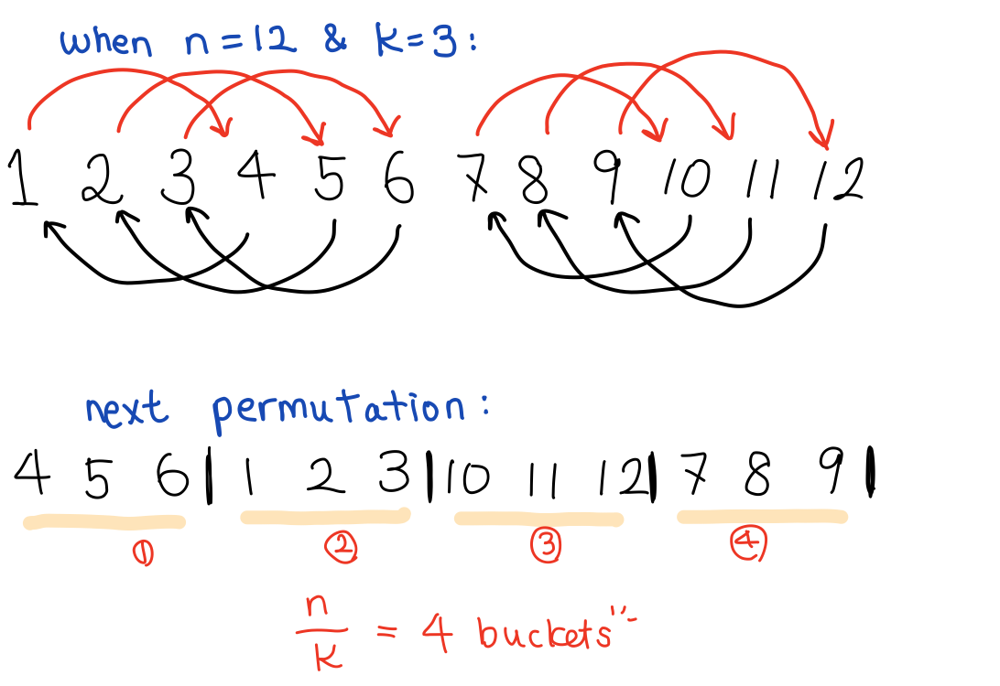
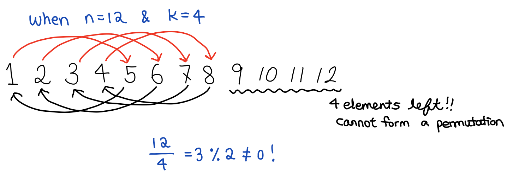

Algorithms - Absolute Permutation (HackerRank)
- HackerRank 알고리즘 문제 중, subdomain 중 하나인 implementation에 있는 Absolute Permutation 문제 풀이 입니다.
문제 :
We define $P$ to be a permutation of the first $n$ natural numbers in the range $[1,n]$. Let $pos[i]$ denote the value at position $i$ in permutation $P$ using 1-based indexing.
$P$ is considered to be an absolute permutation if $\left|pos[i] - i \right|=k$ holds true for every $i \in [1, n]$.
Given $n$ and $k$, print the lexicographically smallest absolute permutation $P$. If no absolute permutation exists, print -1.
For example, let $n=4$ giving us an array $pos = [1,2,3,4]$. If we use 1 based indexing, create a permutation where every $\left|pos[i] - i \right|=k$. If $k=2$, we could rearrange them to $[3,4,1,2]$:
Function Description
It should return an integer that represents the smallest lexicographically smallest permutation, or $-1$ if there is none.
absolutePermutation has the following parameter(s):
- n: the upper bound of natural numbers to consider, inclusive
- k: the integer difference between each element and its index
Input Format
The first line contains an integer $t$, the number of test cases.
Each of the next $t$ lines contains 2 space-separated integers, $n$ and $k$.
Constraints
- $ 1\le t \le 10$
- $ 1 \le n \le 10^{5}$
- $ 0 \le k \le n$
Explanation :
smallest absolute permutation (순열)을 찾는 문제입니다. 문제에서 준 예제를 보겠습니다. $n=4$라면, 1 based indexing으로 array (배열) $pos = [1,2,3,4]$ 를 만듭니다. 그 후, $\left|pos[i] - i \right|=k$ 가 되는 순열을 만듭니다. $k=2$ 라면, 각 position (숫자) 에서 2만큼 떨어져 있는 숫자와 swapping을 해 줍니다. 즉, $1 \rightarrow 3$, $2 \rightarrow 4$, $3 \rightarrow 1$, $4 \rightarrow 2$ 가 되고 이 순열은 $[3,4,1,2]$ 가 됩니다.
| pos[i] | i | | Difference | |
|---|---|---|
| 3 | 1 | 2 |
| 4 | 2 | 2 |
| 1 | 3 | 2 |
| 2 | 4 | 2 |
HackerRank에서 제공하는 몇개의 예제를 보면 smallest absolute permutation이 되기 위한 조건이 하나가 있음을 확인할 수 있습니다:
- $\frac{N}{k}\%2 = 0$
위의 조건은, 숫자 $1,2, … ,N $을 $K$개의 숫자가 있는 $\frac{N}{K}$개의 bucket으로 숫자를 bucket에 나누어 담아야 한다는 것을 의미합니다. 예제로 설명해 보겠습니다. $1,2,3,4,5,6,7,8,9,10,11,12$ 숫자 12개가 있습니다. 이 12개의 숫자의 바로 다음 permutation을 구해 봅니다.

즉, $\frac{N}{K}$ 값이 4가 되고, 이 값이 의미하는 바는, 4개의 bucket이 permutation을 만들기 위해 있어야 한다는 것을 의미합니다. 또한 이렇게 나누어진 bucket의 갯수 또한 짝수여야 합니다 ($\%2= 0$). 위에 그림 처럼 1:1 swapping을 해 주어야 하는데 bucket size가 홀수라면 swapping이 불가능 하기 때문입니다. 확인하기 위해 $K$를 3이 아닌 4로 바꾸어 봅니다.

그러면 오른쪽 숫자 $9,10,11,12$가 남게 됩니다. 그러므로 조건 $\frac{N}{k} \%2 = 0$ 이 성립해야 smallest absolute permutation을 만들 수 있다는 것을 확인할 수 있습니다. 즉 이 조건이 성립하지 않으면 바로 -1을 return해 줍니다.
Exception Case
- k가 영이라면, 1부터 N까지의 숫자 그대로가 smallest absolute permutation이 됩니다. 즉, 그대로 1부터 N까지를 출력하면 됩니다.
Solution
위에서 말한 Exception case 잡기 :
- (1) k==0일 때 모든 숫자 리턴
- (2) 조건 $\frac{N}{k}\% 2 = 0$ 을 성립하지 않으면 -1 리턴
위 케이스들에 해당하지 않는다면:
- (1) for loop을 통해 1부터 N까지 가면서 숫자 (i)에 difference k를 더해 줍니다
- (2) Ascending list이므로 처음에는 k를 더해주다가, i가 k와 같아지는 시점에서 부터는 k를 빼 주어야 합니다 그러므로 add 변수를 True라고 설정하고, i가 k와 같아지는 시점에서 부터 add를 False라고 설정한 후, k를 i에서 빼줍니다.
1 | def absolutePermutation(n, k): |
Test Cases
1 | absolutePermutation(4,2) |
'3 4 1 2'
1 | absolutePermutation(100,2) |
'3 4 1 2 7 8 5 6 11 12 9 10 15 16 13 14 19 20 17 18 23 24 21 22 27 28 25 26 31 32 29 30 35 36 33 34 39 40 37 38 43 44 41 42 47 48 45 46 51 52 49 50 55 56 53 54 59 60 57 58 63 64 61 62 67 68 65 66 71 72 69 70 75 76 73 74 79 80 77 78 83 84 81 82 87 88 85 86 91 92 89 90 95 96 93 94 99 100 97 98'